For this week's assignment I modified the Hello World PCB to have an RGB led and a button. I did all my electronics design in EagleCAD.
{kind=link}
First I threw the fab.lbr file into my Eagle/lbr folder. Then in the control panel I told eagle to use the fab.lbr library according to these instructions.
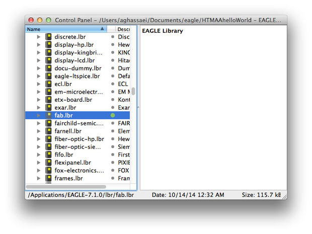
I started the board by inserting all the components from the original Hello World PCB into my schematic editor. I used a combination of wires and nets to make the board more legible.
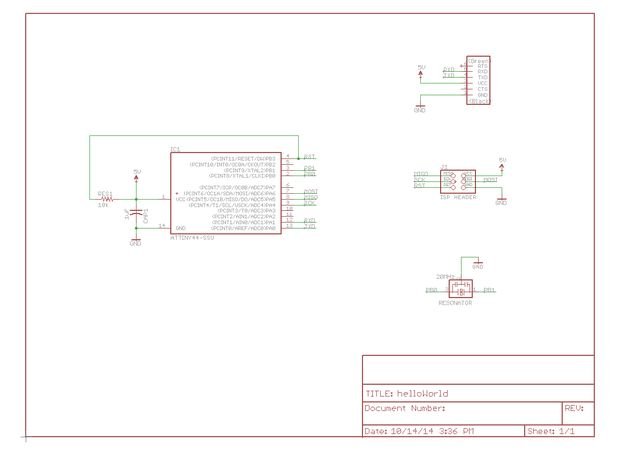
I used the show tool to verify that all my connections were set correctly in the eagle schematic editor.
Next I switched to board layout and laid out my components roughly the same way that they are in the sample schematic.
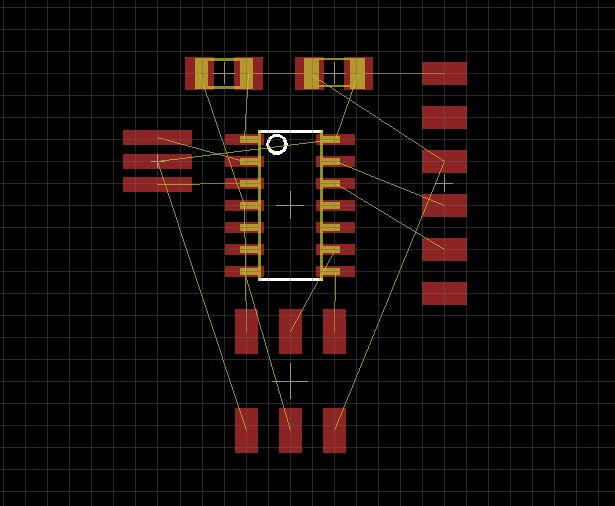
I found a bunch of these common anode RGB LEDs in the CBA shop (datasheet here). The forward current for the R, G, and B leds was 50, 25, and 25mA, respectively and the forward voltage was 2.0, 3.2, and 3.2V. I placed one RGB led and three current limiting resistors in the schematic so that they could be controlled by pins B2, A2, and A3. I also wired up a button and a pull down resistor to pin A7.
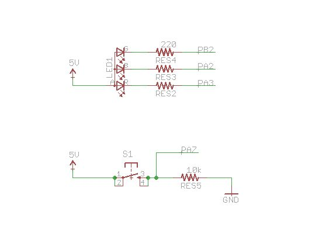
I followed Sparkfun's instructions to create by board layout in eagle. I downloaded the fablab_17mils.dru design rules file and loaded it into Eagle. It checks to make sure that my design is mill-able on the modela with at least 17mil spacing in between all traces. I set my default net class to have 12mil traces with 18 mil clearance before running the autorouter. After autorouting, I only had three traces left to route manually.
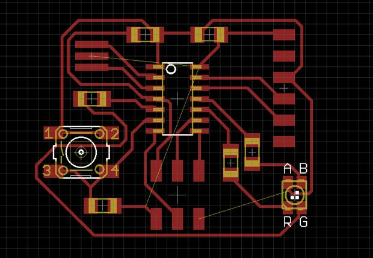
For the manual routing, I held down the alt key to get eagle to snap components to a finer grid- allowing for more precise placement. I used two zero ohm resistors to avoid collisions with existing traces. I wasn't sure exactly how to handle this in Eagle, I didn't want the zero ohm resistors in my schematic, so I added them but didn't connect them to anything with nets. If you look closely, you will see airwires going across them in the image below.
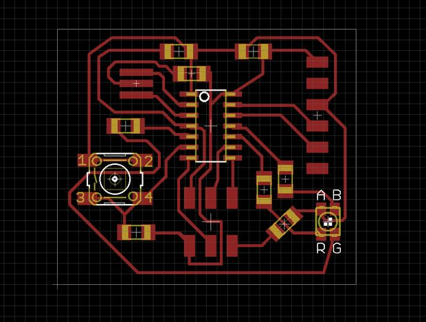
To get the schematic ready for export I deselected all layers except the top layer:
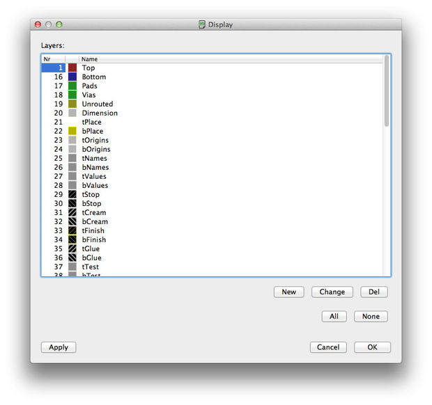 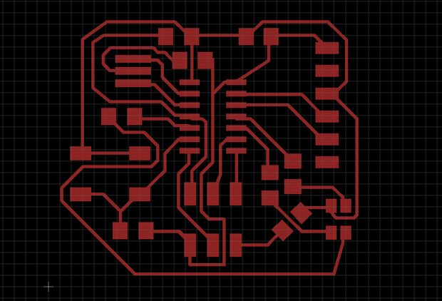
I exported the schematic (File>>Export) as a png at 500 dpi.
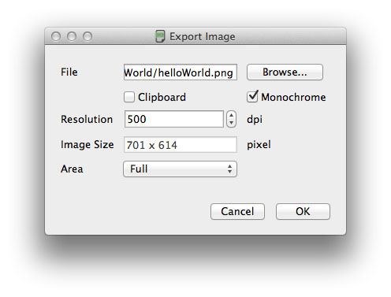 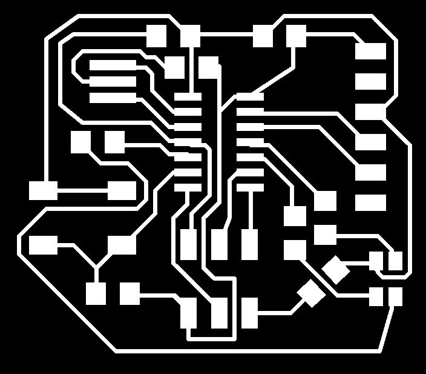
I used Photoshop to generate the board outline.
Milling the PCB went without incident. I used the Modela in the CBA shop connected to the compiled fab modules.
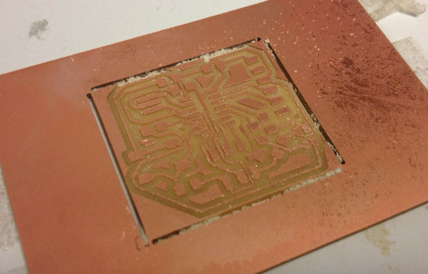
One small problem I had was that the corners of my board outline were not milled, so I had to use a shard blade to score and snap the board out. If I'd made my board outline a little thicker, this probably would not have happened.

I populated the board according to the values set in my schematic. One small change I made was to use 100Ohm resistors instead of 220Ohm for the LEDs, because I could not find any 220 - this should be fine and keep all the LEDs well within their limits. I also made a 6 pin jumper cable for programming my board.
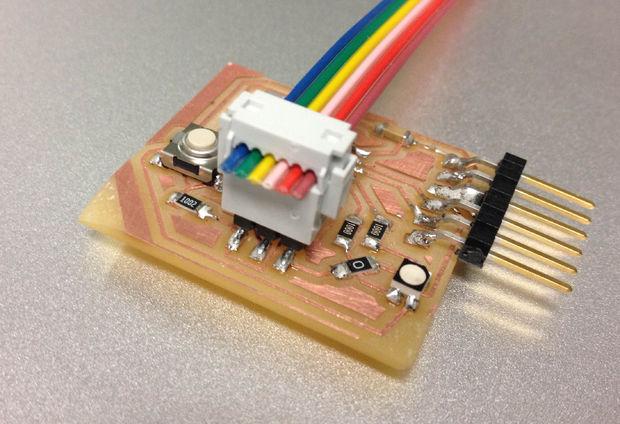 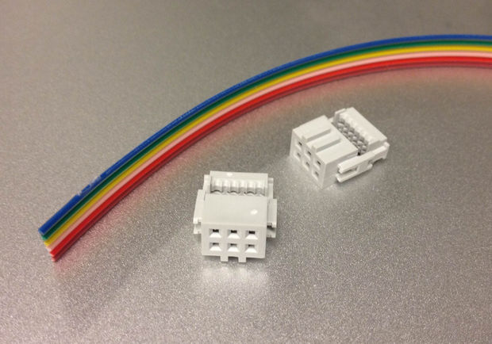
I used High Low Tech's tutorial to get my board programmed. Starting with the blink sketch provided by Arduino, I changed the led pin number to 2 to blink the red LED, 3 to blink the blue LED, and 8 to blink the green LED. One thing I noticed was that I had to change the delay to 10 ms to get it to blink at a decent rate - I think delay() might be relying on timers that the attiny doesn't have, causing it to behave strangely/slowly.
Then I wrote a really simple sketch that turned on the red LED when the button was pressed to be sure the button was working. Here is the important logic in that sketch:
currentButtonState = digitalRead(buttonPin); digitalWrite(redLED, !currentButtonState);
Then I wrote a sketch that allows the button to put the LED into several modes. This sketch uses software button debouncing to turn the momentary button into a 6 state toggle switch.
//helloWorld
byte buttonPin = 7;
byte redLED = 2;
byte blueLED = 3;
byte greenLED = 8;
byte greenLEDPin = 2;//for direct port manipulation (pin 2 on port b)
//green led has pwm - use it
byte currentGreenIntensity = 0;
boolean greenIntensityDirection = true;
byte appState = 0;
boolean currentButtonState = false;
boolean lastButtonState = false;
boolean debouncedButtonState = false;
byte buttonDebounceMax = 10;
byte buttonDebounceTimer = buttonDebounceMax;
void setup(){
//set inputs/outputs
pinMode(buttonPin, INPUT);
pinMode(redLED, OUTPUT);
pinMode(blueLED, OUTPUT);
pinMode(greenLED, OUTPUT);
//turn LEDs off
turnOffAllLEDS();
}
void loop(){
//run only the following lines to do a really simple test to check if button is working
// currentButtonState = digitalRead(buttonPin);
// digitalWrite(redLED, !currentButtonState);
//otherwise run the rest of this:
currentButtonState = digitalRead(buttonPin);
//button debouncing
if (currentButtonState != lastButtonState && currentButtonState != debouncedButtonState){//if current button state is different than last button state and current debounced state
if (currentButtonState){//if the button is currently pressed
debouncedButtonState = currentButtonState;
appState = getNextAppState(appState);
} else {
buttonDebounceTimer = buttonDebounceMax;//reset debounce counter
}
} else if (currentButtonState == lastButtonState && currentButtonState != debouncedButtonState){//if current state same as last but different that debounced
buttonDebounceTimer--;
if (buttonDebounceTimer == 0){
debouncedButtonState = currentButtonState;
if (currentButtonState){//if the button is currently pressed
appState = getNextAppState(appState);
}
}
}
lastButtonState = currentButtonState;
turnOffAllLEDS();
switch(appState){
case 0://red
analogWrite(greenLED, 255);
// digitalWrite(redLED, LOW);
PORTA &= ~(1 << redLED);
break;
case 1://purple
PORTA &= ~(1 << redLED);
PORTA &= ~(1 << blueLED);
break;
case 2://blue
// digitalWrite(blueLED, LOW);
PORTA &= ~(1 << blueLED);
break;
case 4://yellow
PORTA &= ~(1 << redLED);
PORTB &= ~(1 << greenLEDPin);
break;
case 3://green pulsing
// digitalWrite(greenLED, LOW);
pickGreenPWMColor();
break;
case 5://reddish green
PORTA &= ~(1 << redLED);
pickGreenPWMColor();
break;
}
}
byte getNextAppState(byte state){
state++;
if (state > 5) return 0;
return state;
}
void turnOffAllLEDS(){
//these are common anode leds, so we have to remove their connection to ground to turn them off
// digitalWrite(redLED, HIGH);
// digitalWrite(blueLED, HIGH);
// digitalWrite(greenLED, HIGH);
PORTA |= (1 << redLED);
PORTA |= (1 << blueLED);
PORTB |= (1 << greenLEDPin);
}
void pickGreenPWMColor(){
if (greenIntensityDirection){
currentGreenIntensity++;
if (currentGreenIntensity == 255) greenIntensityDirection = false;
} else {
currentGreenIntensity--;
if (currentGreenIntensity == 0) greenIntensityDirection = true;
}
analogWrite(greenLED, currentGreenIntensity);
delayMicroseconds(100);
}
When wiring, I didn't want to mess with any of the pins connected to data because I was worried it would interfere with programming the board. This meant that my LED was only hooked up to one of the 4 PWM pins on the attiny (stupidly, I connected the button to one of them because I didn't plan things out that well). When I have more time, I'd like to dive into port/pin manipulation and timer interrupts for the attiny to see if I could get a nice fade effect through software. All this info can be found in the datasheet.